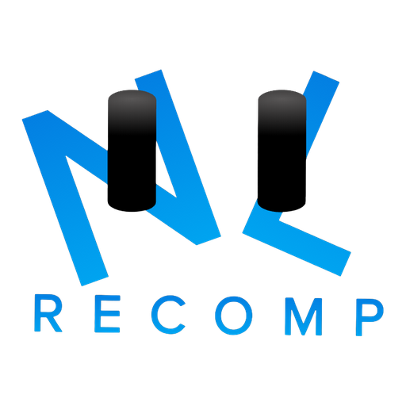

Nintendo Land,
native on PC.
Its own NintendoLand.exe with its own window, an in-game settings menu, controller support and online play with friends over Steam — no emulator window, no Cemu UI.
Quick start
- Install Python 3.8+ from python.org (tick “Add to PATH”).
- Download the release ZIP, extract it and run
start.bat. - Pick your extracted game folder — the one with
code/,content/andmeta/. - Click Build game. If Git or the Visual Studio Build Tools are missing, the launcher offers to install them via winget (~6–8 GB, asks for admin rights once). The first build takes a while.
- Click PLAY.
Good to know
- Shaders are compiled ahead of time by the launcher, so the game doesn't stutter the first time you see something.
- No GUI?
python launcher.py --cliruns every step usingsettings.json. - Windows only for now.
Online with friends
The host runs the game, friends see the host's TV image and play as Wiimote players 2–5. Friends don't need the game.
🏠 Host
- Esc → Online → Open room
- Share the 6-letter code — or invite friends straight from the friend list.
- Kick players or switch a Wiimote to sideways from the same page.
🙋 Friends
- Run NLOnline.exe (from
NLOnline_fuer_Freunde.zipin the release or the host'sbinfolder). - Enter the code, or click Join next to the host in the friend list.
Requirements
- Steam must be running on both sides. Friends, codes and NAT traversal use Steam's test app “Spacewar” (AppID 480).
- Upload per friend:
| Quality (Online menu) | Resolution | Upload per friend |
|---|---|---|
| Low | 540p | ~3.5 Mbit/s |
| Medium | 720p | ~6 Mbit/s |
| High | 720p+ | ~12 Mbit/s |
Controls
Controllers
Xbox, PlayStation (incl. gyro), Switch Pro and more. The first controller is the GamePad, every further one becomes a Wiimote with Nunchuk. The button layout (Nintendo-style A right, or Xbox/PS-style A bottom) is picked automatically and can be changed in the menu.
Window & mouse
| Key | Action |
|---|---|
| Esc / Home / Guide | Open the menu (Esc also releases the mouse) |
| F11 / Alt+Enter | Fullscreen |
| Tab | Swap TV / GamePad image |
| Click big image | Capture the mouse as camera |
| Click GamePad image | Touch screen |
Default keyboard layout
Everything can be rebound in the menu (two keys + one controller button per action).
| GamePad | Key | GamePad | Key |
|---|---|---|---|
| Left stick | WASD | Right stick | IJKL |
| A | Enter / E | B | Backspace / Ctrl |
| X | Space | Y | F |
| L / R | Q / R | ZL / ZR | 1 / 3 |
| + / − | P / M | D-pad | Arrow keys |
| Stick clicks | C / V | Microphone | T |
| Home | H | Swap screens | Tab |
How it works
recomp/statically recompiles the game's PowerPC code to C++ — on your PC, from your dump.- Cemu's core libraries (MPL-2.0) provide the Wii U OS, graphics (Vulkan), audio and input. Cemu's UI isn't used.
nlrecomp/cemu.pyfetches a pinned, tested Cemu version and applies small patches. frontend/is the game program (window, menu, input, online);frontend/client/is NLOnline.exe.
| Folder | Contents |
|---|---|
launcher.py, nlrecomp/ | Launcher: detect the game, recompile, install build tools, build, launch |
recomp/ | Recompiler .rpx → C++ |
cemu/aot/ | Integration of the recompiled code into Cemu |
frontend/ | NintendoLand.exe and NLOnline.exe |
third_party/steam/ | steam_api64.dll (Valve redistributable) |
runtime/, aroma-plugin/, tools/ | Experiments and helper tools |
Roadmap — v0.2
1 · Fixes first
- Smoother streaming: higher Steam send rate, smaller video packets, regular keyframes, adaptive bitrate.
- Sound without crackling: jitter buffer, later Opus instead of raw PCM.
- Wiimote pointer for friends (mouse / right stick / gyro), not just clicks.
2 · Quick features
- New logo everywhere · “NL” branding · English & German texts · live chat (T / Enter)
3 · Bigger features
- Real Wiimotes over Bluetooth (host first, then friends) · bring your own Mii online
4 · Research
- Seeing each other in the Plaza · real lockstep netplay where everyone owns the game
FAQ
Is this an emulator?
No window of Cemu or any other emulator is used. The game's code is recompiled to native C++; Cemu's core libraries are used under the hood for the Wii U OS, graphics, audio and input.Where do I get the game?
Only from your own Wii U and your own copy of Nintendo Land — dump it with a tool like dumpling. Nothing is downloaded or shipped by this project.Do my friends need the game?
No. Friends only run NLOnline.exe and see the host's stream.Online says “Steam not connected”.
Start Steam first, then restart the game.The stream stutters.
Lower the quality in Online (Low = ~3.5 Mbit/s per friend). Smoother streaming is the top item for v0.2.The first build takes forever.
That's normal — the whole game is recompiled and compiled once. Later starts are fast.Legal
Nintendo Land is © Nintendo. This is an unofficial fan project and is not affiliated with or endorsed by Nintendo. It contains no Nintendo code or assets; you must own the game.
Cemu is licensed under MPL-2.0. steam_api64.dll is redistributed under the Steamworks SDK terms.